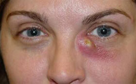
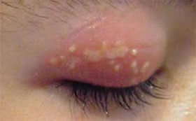
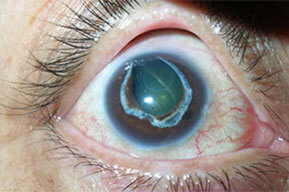
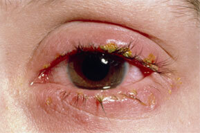
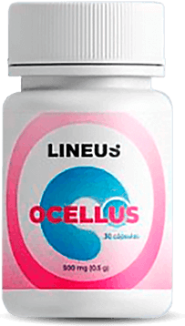
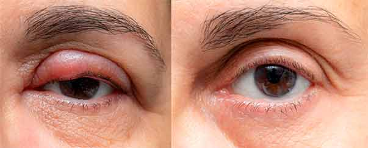
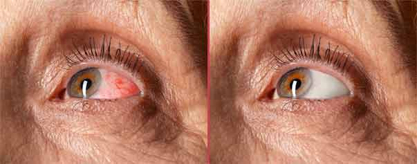

Información de un insider: cómo recuperar la visión en 4 semanas
- 4 min de lectura

¡LOS MÉDICOS LES ENGAÑAN CUANDO DICEN QUE ES IMPOSIBLE MEJORAR LA VISIÓN SIN CIRUGÍA!
Un reconocido oftalmólogo perdió su trabajo al ayudar a las personas a ver mejor sin cirugía ni medicamentos costosos. Los editores no podíamos permitirnos ignorar lo que había sucedido, ¡así que decidimos dar a conocer esta flagrante injusticia!
Experto en oftalmología Carlos Domínguez Torres
Nuestro invitado es un experto en el campo de la oftalmología, Carlos Domínguez Torres.
Durante sus 15 años de práctica médica, ayudó a miles de pacientes a deshacerse de los problemas de visión, pero recientemente, la exitosa carrera de Carlos Domínguez Torres se dio por finalizada. Dado que no quería seguir las reglas de las autoridades corruptas y engañar a los pacientes, el Dr. Domínguez se vio obligado a firmar una carta de baja voluntaria. El especialista perdió su trabajo, sus ingresos y la posibilidad de tratar a los pacientes
A pesar de los posibles riesgos, el Dr. Domínguez accedió a hablar sobre la política actual de las instituciones médicas.
Dr. Domínguez, cuéntenos, ¿tuvo algún conflicto con sus superiores a lo largo de toda su carrera?
Antes, nunca. No hubo ninguna razón para ello. Me han dicho que los pacientes todavía llaman a la clínica, expresan su gratitud y piden que vuelva a trabajar. Rezan por mí en los templos y escriben en las redes sociales.
Los problemas con mis superiores comenzaron hace aproximadamente un año. Discusiones regulares, sabotaje. Presión
¿Cuál era la causa de los conflictos?
Todo el mundo sabe que muchas clínicas cooperan con empresas farmacéuticas y farmacias. La nuestra no fue una excepción. Nos vimos obligados a tratar a los pacientes de acuerdo con un protocolo específico, el cual, por no decir más, era ineficaz.
¿Es ilegal?
Como mínimo, es deshonroso y va en contra de la ética médica, pero lo cierto es que sigue siendo lo más inofensivo que ocurre dentro de los muros de las instituciones médicas. Inicialmente, a cada especialista se le daba un plan de ventas de ciertos medicamentos para la visión. Si un médico había recetado muchos medicamentos, eso significaba que había cumplido con el plan, así que podía recibir una bonificación.
Luego, eso se volvió obligatorio, lo cual es ilegal. Después de todo, algunos medicamentos son absolutamente inútiles. Son productos totalmente ineficaces que a priori no pueden combatir la patología visual ni frenar una enfermedad progresiva. Con el tiempo, esto solo agrava el problema.
Los síntomas leves (fatiga, espasmos, presión ocular alta, enrojecimiento, ardor y ojos arenosos) se vuelven crónicos. Después, empiezan los cambios irreversibles: empeoramiento de la visión, miopía, hipermetropía, astigmatismo. Con tales patologías, el riesgo de sufrir blefaritis, úlceras de retina, glaucoma y ceguera aumenta en un 17%.
Lo peor de todo es que nueve de cada diez médicos no ayudan al paciente. Su misión no es curarlo, sino convertirlo en adicto a los medicamentos / farmacias / clínicas, obtener un soborno y ampliar la base de clientes. Solo persiguen beneficios comerciales.
Por encima de todo está el grosor de su propia billetera. Desafortunadamente, actualmente, el lema de muchas clínicas y farmacias es: "Cliente sano, cliente perdido".
¿Entonces usted se negó a cooperar y esto no les gustó a sus superiores?
Así es. Pero no sin fundamento.
Con otros compañeros del trabajo, unos verdaderos profesionales, analizamos las composiciones y las acciones de los medicamentos para la visión con los que nos veíamos obligados a tratar a los pacientes. Lo que les voy a decir les va a sorprender, pero solo algunos de ellos tienen el efecto declarado. La dinámica del tratamiento era lenta. La enfermedad progresaba en uno de cada dos pacientes.
Investigamos alrededor de cien componentes restauradores, seleccionamos los mejores y presentamos los resultados a un grupo de científicos. Ellos crearon una fórmula única llamada ® y la protegieron con una patente.
Después de varias etapas de pruebas, llegamos a la conclusión de que el producto estaba listo para su lanzamiento al mercado. Nos alegraron los resultados del grupo focal. Todos los sujetos tuvieron una dinámica positiva:
la claridad de la visión aumentó en un 61-80%
97%
desapareció la incomodidad en los ojos por los smartphones, televisores, computadoras y libros
99%
desaparecieron la sequedad, la irritación y el lagrimeo de los ojos
92%
disminuyó el riesgo de desarrollar glaucoma, cataratas y desprendimiento de la retina
74%
se repusieron las deficiencias de micronutrientes para la salud ocular
100%
¡Los resultados son realmente asombrosos! ¿Y qué pasó después? ¿Cómo reaccionaron sus superiores?
Propuse introducir este producto al director de la clínica, pero él me dejó claro que no le interesaba. Es más, simplemente nos cortó el oxígeno.
Propusimos introducir nuestro producto al protocolo para el tratamiento de enfermedades oculares, pero los centros oftalmológicos rechazaron nuestra oferta a pesar de la eficacia y los asombrosos resultados de los pacientes y la patente.
Pero eso tampoco me hizo abandonar mi objetivo. Les decía abiertamente a mis pacientes que tenían una opción: o bien confiar en mí y deshacerse de los problemas oculares, o bien adherirse al régimen de tratamiento clásico y poner en riesgo su salud.
¿Cómo reaccionaron los pacientes?
La mayoría me hizo caso y vio los resultados en poco tiempo. La manifestación de síntomas desagradables disminuyó. La verdad es que me alegré mucho.
¿Qué tiene de especial este producto? ¿Por qué es tan eficaz?
Durante nuestros estudios, nos dimos cuenta de que los micronutrientes más efectivos para restaurar la visión eran los extractos de alcachofa, manzanilla, noni, lechuga y maca. Sería un crimen no usarlos, por ello, se convirtieron en la base de la fórmula ® .
La combinación de ingredientes activos actúa en varias direcciones a la vez:
- Neutraliza el daño de la luz azul de pantallas, monitores y TV. Reduce la picazón, el ardor y la sequedad de ojos. Elimina los espasmos oculares y la visión borrosa. Los ojos casi no responden al parpadeo agresivo y parecen estar en reposo.
- Previene la degeneración macular y el desarrollo de cataratas. Elimina la tensión, la inflamación y la irritación del globo ocular.
- Protege la retina y el cristalino de los cambios asociados a la edad.
- Aumenta la agudeza visual, la sensibilidad a la luz y la claridad en un 6% tras un ciclo de tratamiento.
Dr. Domínguez ¿quiere decir que ahora no hay que recurrir a la cirugía ni a la corrección de la visión con láser?
Así es. Tan pronto como se lance al mercado, estos procedimientos perderán su relevancia. Los pacientes podrán prescindir de las visitas constantes a los médicos y una enorme lista de medicamentos innecesarios.
Lo único que hay que hacer es tomar una cápsula de todos los días durante un ciclo de tratamiento (30 días).
¿Quiénes necesitan tomar este producto?
Recomiendo ® en caso de una baja visión y diversas desviaciones de dioptrías, fatiga visual prolongada, en caso del trabajo frente a la computadora, fatiga ocular rápida, infecciones oculares, para conductores, así como para pacientes mayores de 40 años para prevenir la pérdida de visión asociada a la edad, las cataratas y el glaucoma.
Dr. Domínguez, ¡todo lo que nos ha contado es realmente impresionante! Pero, ¿cómo pueden nuestros lectores obtener este producto si las empresas farmacéuticas se niegan a cooperar con usted?
En busca de ganancias, las empresas farmacéuticas presionan las palancas necesarias y no permiten que ® se venda en las farmacias, ¡pero esto no significa que el producto no esté disponible para la población! Pueden ordenar ® para restaurar la visión en el sitio web oficial .
En agradecimiento por su interés en mí y la situación actual, ofrezco un 50% de descuento en el producto para todos los lectores. Nuestro objetivo es una nación saludable. ¡Les deseo a todos mucha salud!
Publicamos el enlace al sitio web oficial donde pueden ordenar ® para restaurar la visión con un 50% de descuento:
Comentarios de usuarios